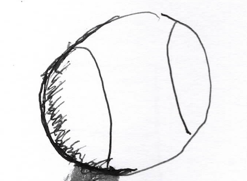

ὁ Γρηγόριος οἰκεῖ ἐν οἰκίᾳ (ἢ οἴκῳ) μεγάλῃ. ὁ πατήρ, ἡ μήτηρ, καὶ τὰ παιδία, ἐν τῷ οἴκῳ οἰκοῦσιν. ὁ Γρηγόριος καὶ ἡ Εὐγενίᾱ τέσσαρα (4) παιδία ἔχουσιν· δύο υἱοὺς καὶ δύο θυγατέρας.
καὶ δὴ καὶ ἐν τῇ οἰκίᾳ πολλοὶ δοῦλοι οἰκοῦσιν. ὁ δὲ Γρηγόριος κῡ́ριος αὐτῶν ἐστιν, οὗτος γὰρ πολλοὺς δούλους ἔχει. καὶ κῡρίᾱ δουλῶν πολλῶν ἐστιν ἡ Εὐγενίᾱ, αὑτὴ γὰρ πολλὰς δούλᾱς ἔχει.
σύν ≍ μετά
σὺν δὲ τοῖς παιδίοις οἰκοῦσιν ὁ πατὴρ καὶ ἡ μήτηρ. οἱ γονεῖς (πατήρ καὶ μήτηρ) μετὰ παιδίων οἰκοῦσιν ἐν τῷ οἴκῳ. οἱ υἱοὶ καὶ αἱ θυγατέρες σὺν τῷ Γρηγορίῳ καὶ σὺν τῇ Εὐγενίᾳ οἰκοῦσιν. οὐ μόνον σὺν παιδίοις, ἀλλὰ καὶ μετὰ τῶν δούλων οἰκοῦσιν ἡ Εὐγενίᾱ τε καὶ ὁ Γρηγόριος.
| ὁ ἄγρος | ἡ πόλις = τὸ ἄστυ |
ὁ οἶκος τοῦ Γρηγορίου οὐκ ἔστιν ἐν τοῖς ἀγροῖς, ἀλλὰ ἐν τῷ ἄστει. ποῦ οἰκεῖ ὁ Γρηγόριος; ἐν τῇ Ἀντιοχείᾳ, καὶ ἡ Ἀντιόχειά ἐστιν πόλις ἢ ἄστυ. καὶ δὴ καὶ ὁ Γηργόριος ἐν τῇ πόλει, ἐν τῇ Ἀντιοχείᾳ, οἰκεῖ. ὁ μὲν οὖν οἶκος οὐκ ἔστιν ἐν κήπῳ, ἢ μεγάλῳ ἢ μικρῷ. ἔστι δὲ κῆπος μῑκρὸς ἐν τῇ οἰκίᾳ.
καλή ἐστιν ἡ Εὐγενίᾱ. καλός ἐστιν ὁ Γρηγόριος. καλά εἰσιν τὰ παιδία αὐτῶν· οἱ μὲν υἱοὶ καλοί, αἱ δὲ θυγατέρες καλαί. ἆρα οἱ δοῦλοι καλοί; οἱ μὲν καλοί, οἱ δὲ αἰσχροί. τίς ἐστιν δοῦλος αἰσχρός; ὁ Σωσίᾱς ἐστὶν αἰσχρός. ὀφθαλμὸν γὰρ κακὸν ἔχει. διὰ τί ὀφθαλμὸν κακὸν καὶ αἰσχρὸν ἔχει ὁ Σωσίᾱς; ὅτι ὁ δεσπότης ἀεὶ τύπτει αὐτόν.
| θύρα καὶ δύο θυρίδες (ἡ θυρίς) |
ἐν τῷ οἴκῳ τοῦ Γρηγορίου εἰσίν δύο θύραι. ἡ μὲν ἑτέρᾱ θύρᾱ ἐστὶ μεγάλη, ἡ δὲ ἑτέρᾱ θύρᾱ ἐστὶ μῑκρά. καὶ ὁ οἶκος πολλᾱ̀ς θυρίδας ἔχει. πολλαὶ θυρίδες ἐν τῷ οἴκῳ εἰσίν. καὶ ἐν τῷ οἴκῳ ἐστὶν αὐλή.
ἐν τῇ αὐλῇ ἔστιν κῆπος μῑκρός. ἄλλοι μὲν οἶκοι περίστῡλα ἔχουσιν, ἄλλοι δὲ οὔ. ἆρα περίστῡλον ἐν τῷ οἴκῳ τούτῳ; ναί, ἐν τῇ τοῦ Γρηγορίου οἰκίᾳ ἔστιν περίστῡλον, οὐ μέγα, ἀλλὰ καλόν.
οίήμα = τόπος ἐν οἴκῳ οὑ μέγας ἐν ᾧ καθεύδουσιν ἄνθρωποι.
καὶ δὴ καὶ ἐν τῷ οἴκῳ ἐστὶ πολλὰ οἰκήματα. ὁ μὲν Ἀλέξιος ἐν οἰκήματι μῑκρῷ καθεύδει. τί περὶ Δημητρίου; καὶ οὗτος καθεύδει ἐν μῑκρῷ οἰκήματι. ἡ δὲ Εἰρήνη καὶ ἡ Σοφίᾱ ἅμα καθεύδουσιν ἐν οἰκήματι γυναικῶν. ἄλλοι δὲ ἄνθρωποι, ὡς δοῦλοι, ἐν ἄλλοις οἰκήμασιν καθεύδουσιν, οἱ ἄνδρες ἐν ἑνὶ οἰκήματι, τῷ ἀνδρῶνι, αἱ δὲ γυναῖκες ἐν ἑνὶ ἄλλῳ οἰκήματι, τῷ γυναικῶνι.
ἄνευ ↔︎ σύν ἢ μετά
ἡ οὖν Εὐγενίᾱ ἐστὶν ἐν τῇ αὐλῇ. ἆρά ἐστιν μόνη; οὐ μόνη ἐστὶν ἡ Εὐγενίᾱ. αἱ κόραι σὺν αὐτῇ εἰσιν ἐν τῇ αὐλῇ. ὁ δὲ Γρηγόριος ἄπεστιν. ἡ γυνὴ ἐν τῇ οἰκίᾳ ἐστὶν *ἄνευ τοῦ ἀνδρὸς αὐτῆς. ποῦ δέ ἐστιν ὁ Γρηγόριος; σήμερον ἔξω Ἀντιοχείᾱς ἐστίν, ὅτι πρὸς τοὐς ἀγροὺς πορεύεται, μετὰ τοῦ Ἀλεξίου καὶ δούλων.
ἐν δὲ τούτῳ, ἡ Εὐγενίᾱ μετὰ τῶν τριῶν παιδίων ἐν τῇ αὐλῇ ἐστιν. αἱ μὲν κόραι καὶ ἡ μήτηρ λαλοῦσιν, ὁ δὲ παῖς παίζει ἐν τῷ περιστῡ́λῳ. ὁ δὲ Δημήτριος ἀπὸ τῆς Εὐγενίᾱς ἀποχωρεῖ.
|  | |
| βάλλει ↔︎ λαμβάνει | ἡ σφαῖρα |
| ζητεῖ |
τέσσαρες πάρεισιν, μία γυνὴ καὶ τρία παιδία, δύο κόραι καὶ εἷς παῖς. καὶ ἔστιν σφαῖρα. ὁ δὲ παῖς βάλλει τὴν σφαῖραν πρὸς τὰς ἀδελφὰς αὐτοῦ. αἱ δὲ λαμβάνουσιν τὴν σφαῖραν καὶ βάλλουσιν αὐτὴν πρὸς τὸν ἀδελφὸν αὐτῶν. ὁ δὲ λάμβανει τὴν σφαῖραν καὶ πάλιν βάλλει.
ἡ μὲν οὖν Εἰρήνη βάλλει ὑπὲρ τὸν Δημήτριον τὴν σφαῖραν. ὁ δὲ παῖς ἀπέρχεται καὶ ζητεῖ αὐτήν. νῦν δὲ οὐχ ὁρᾷ αὐτὸν ἡ μήτηρ. οὐδὲ οὗτος ὁ παῖς αὐτὰς ὁρᾷ.
ἰδού, ἔστιν ἀνήρ πρὸς τῇ θύρᾳ. ἐκεῖνος οὖν κόπτει. ἡ δὲ Εἰρήνη ἐκείνου ἀκούει καὶ κελεύει τὴν ἀδελφὴν αὐτῆς, τὴν Σοφίᾱν, λεγοῦσα, «κάλει μητέρα!» ἡ δὲ ἀδελφή, ἡ Σοφίᾱ, καλεῖ τὴν Εὐγενίᾱν.
ἡ δὲ Εὐγενίᾱ κελεύει τὰς θυγατέρας, λέγουσα, «καλεῖτε τὸν ἀδελφόν ῡ̔μῶν.» αἱ δὲ καλοῦσιν, λέγουσαι, «Δημήτριε, ἐλθὲ δεῦρο.»
ὁ Δημήρτιος ἔρχεται. «τί ἐστιν, ὦ μῆτερ;» ἡ δὲ ἀποκρῑ́νεται, λεγοῦσα, «ἀνήρ τις πάρεστιν. προσέλθε πρὸς τὴν θύρᾱν μετὰ δούλου καὶ ἐρώτᾱ.
ὁ δὲ Δημήτριος καλεῖ δοῦλον, Τροχίλον, καὶ ἅμα προσέρχονται πρὸς τὴν θύρᾱν. ὁ μὲν Τροχίλος λαλεῖ, ὁ δὲ Δημήτριος σῑγᾷ.
Τροχίλος· τίς εἶ σύ, οὗτος;
Ἄγγελος· ἄγγελός τις εἰμι, ἐκ τῶν ἀγρῶν ἔρχομαι.
Τροχίλος· ἀλλὰ, ἐκ τίνος τῶν ἀγρῶν ἔρχῃ, ὦ φίλε;
Ἄγγελος · δήλως, ἐκ τῶν ἀγρῶν τοῦ Γρηγορίου, τοῦ κῡρίου μου.
Τροχίλος· οὗτος δὲ εἰς τοὺς ἀγροὺς αὐτοῦ σήμερον πορεύεται. τὶ ἐνθάδε ζητεῖς;
Ἄγγελος · τὰ ἀληθῆ λέγεις; εἰς τοὺς ἀγροὺς πορεύεται ὁ Γρηγόριος; οἴμοι, ματαίως οὖν ἔρχομαι εἰς τὴν πόλιν σήμερον. νῦν δὲ ἀποχωρῶ.
ὁ οὖν δοῦλος καὶ ὁ παῖς ἐπανέρχονται πρὸς τὴν Εὐγενίᾱν. ἡ δὲ αὐτοὺς ὁρᾷ καὶ ἐρωτᾷ, λέγουσα, «τίς ἐστιν, καὶ τί βούλεται;» ὁ δὲ Δημήτριος ἀποκρῑ́νεται λέγων, «οὗτος ὁ ἀνήρ ἐστι ἄγγελος, καὶ τὸν πατέρα ζητεῖ. ἐκ γὰρ τῶν ἀγρῶν ἔρχεται, καὶ νῦν πάλιν εἰς τοὺς ἀγροὺς ἐπανέρχεται.»
| οἱ δούλοι βαδίζουσιν | ὁ κύριος ἐπὶ ἴππου ὀχείται |
ἆρα ὁ Γρηγόριος ἐν τοῖς ἀγροῖς; οὐκ ἐν τοῖς ἀγροῖς ἀλλὰ ἐν τῇ ὁδῷ. νῦν δὲ εἰς τοὺς ἀγροὺς πορεύεται. ὁ γὰρ κῡ́ριος σὺν τέσσαρσι δούλοις ἀποχωρεῖ τῆς πόλεως. οὗτοι μὲν βαδίζουσιν, ὁ δὲ κῡ́ριος ἐπὶ ἵππου ὀχεῖται.
οἰκίᾱ ἔστιν καὶ τοῦ Τροχίλου. τίς ἐστιν ὁ Τροχίλος; οὗτός ἐστιν δοῦλος ἐν τῷ τοῦ Γρηγορίου οἴκῳ. καὶ δὴ καὶ ἀνήρ Ῥωμαϊκός ἐστιν ὁ Τροχίλος. διὰ τί οὗτος ὁ ἀνὴρ ὁ Ῥωμαϊκὸς δοῦλός ἐστιν; ὁ γὰρ πατὴρ τοῦ Τροχίλου ἦν δοῦλος, νῦν δὲ αὐτός ἐστι δοῦλος.
οὐ μόνον δοῦλός ἐστιν ὁ Τροχίλος, ἀλλὰ καὶ ἀνὴρ ὃς γυναῖκα ἔχει. τίνος γυναικός ἐστι ὁ Τροχίλος; τίς ἐστιν ἡ γυνὴ τοῦ Τροχίλου; Ἡ Κίλισσα γυνὴ τοῦ Τροχίλου ἐστίν. ὅ τε Τροχίλος καὶ ἡ Κίλισσα ἅμα οἰκοῦσιν ἐν τῷ τοῦ Γρηγορίου οἴκῳ. οὐ γὰρ ἔχουσιν οἶκον ἄλλον, ἐν ᾧ οἰκοῦσιν. ἡ οὖν οἰκίᾱ αὐτῶν (= τοῦ Τροχίλου καὶ τῆς Κιλίσσης) ἐστιν ἐν τῷ τοῦ δεσπότου οἴκῳ.
ἕξ οὖν παιδία ἔχουσιν, τέσσαρες μὲν υἱοί εἰσιν, δυὸ δὲ θυγατέρες. τοῖς υἱοῖς μὲν οὖν ἐστι ὀνόματα Ῥωμαϊκά, ταῖς δὲ θυγατρᾱ́σιν Ἑλληνικά. αἱ γὰρ θυγάτερές εἰσιν Σωφρονίᾱ καὶ Φοίβη. τίνα τὰ ὀνόματα τοῖς υἱοῖς; Μαρκὸς, Κοΐντος, Τῑ́τος, καὶ Οὐῑ́βιος.
χαίρουσι οὖν τὰ παιδία τῆς Κιλίσσης; οὐ πολλάκις, ὅτι καὶ δοῦλοί εἰσιν οἱ ἕξ.
οἱ ἔξ = οἱ ἔξ παῖδες.